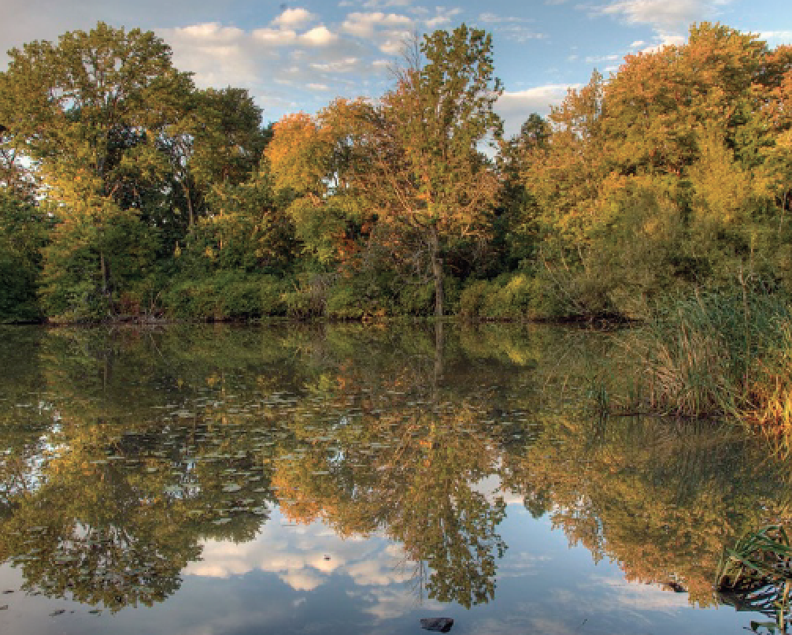
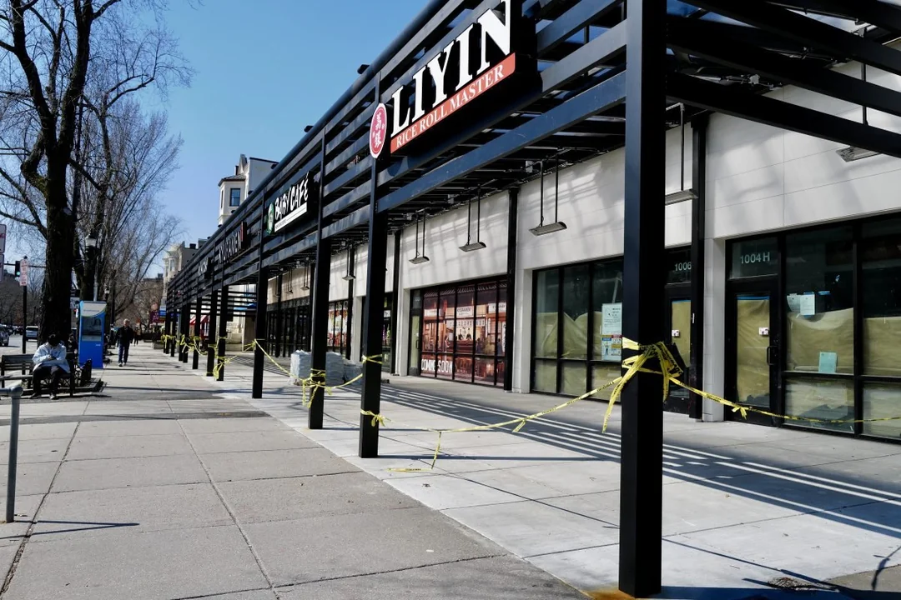

Precinct 1 sits in the northeastern corner of Brookline, where the town meets Boston along the Muddy River and the Riverway. It includes Longwood and Cottage Farm, two of Brookline's earliest planned neighborhoods and both listed on the National Register of Historic Places. Cottage Farm is also a Local Historic District, which gives it another layer of protection. The precinct is unusually well served by transit, with St. Mary's, Hawes Street, and Kent Street on the Green Line's C branch and Longwood on the D branch. Fenway Park and Boston University's main campus are just across the line in Boston, so this part of Brookline has a different feel from most of town: dense, connected, and always a little busier.
The area's modern history starts with David Sears II, one of Boston's major landowners, who began buying up low-lying pastureland here in the 1820s. South of Beacon Street, he developed Longwood, a name borrowed from Napoleon's estate on St. Helena. Instead of laying the neighborhood out on a strict grid, he built around a series of residential squares: Knyvet, Longwood, Mason, and Winthrop, all still there. He also planted an estimated 14,000 trees, including many brought from Europe. The best-known survivors from that effort are the European beeches on the Longwood Mall, the 2.5-acre linear park at Kent and Beech Streets. The trees were planted sometime between 1836 and 1840 and are believed to have come from England. The grove is widely regarded as the oldest stand of European beech trees in North America. Charles Sprague Sargent, who founded the Arnold Arboretum, called them "Brookline's noblest possessions."
North of Beacon Street, the land became Cottage Farm. Sears sold it in 1850 to Amos Adams Lawrence, who built a Gothic Revival estate there and then divided the property into large house lots. He was selling a particular idea: a quiet, high-end residential district within easy reach of Boston. Much of that character is still visible. The neighborhood includes Gothic Revival, Queen Anne, Shingle, Tudor Revival, and Arts and Crafts houses, many by prominent architectural firms of the late nineteenth and early twentieth centuries. On the Longwood side, the Longwood Towers still dominate the skyline. They began as Gothic Revival apartment buildings and have since been converted into luxury condominiums.

One of the precinct's most important natural areas is Hall's Pond Sanctuary and Amory Woods, a five-acre conservation site at Amory and Freeman Streets. Hall's Pond is one of only two natural ponds left in Brookline and the only conservation land in North Brookline. It was once part of a larger wetland known as Cedar Swamp. In the 1890s the pond was owned by Minna Hall, a co-founder of the Massachusetts Audubon Society. The town bought the property in 1975 as its first conservation land. A boardwalk now circles the pond through restored wetlands, upland habitat, and a formal garden that has been maintained for more than a century. Great blue herons, kingfishers, and red-winged blackbirds all turn up there. In a dense part of town, Hall's Pond still feels unexpectedly quiet.

The St. Mary's business district along Beacon Street is the precinct's commercial center. For years it has served both neighborhood residents and nearby students with a mix of small shops, restaurants, and everyday services. More recently, several Asian-influenced restaurants have opened near Beacon and St. Mary's, adding to the area's food scene rather than replacing what was already there. H Mart, at 1028 Beacon Street, has also become a major draw for both groceries and prepared food.

Boston University has a substantial footprint in the precinct through its Wheelock campus on Hawes Street, which houses education and human development programs. Over the years BU has also acquired several historic homes in Cottage Farm and uses them for offices and administrative space. The Lawrence School, a K-8 public school named for Amos Lawrence, sits just outside the precinct but serves many families who live in it.
The precinct also sits next to the Longwood Medical and Academic Area, with Brigham and Women's Hospital, Dana-Farber Cancer Institute, Beth Israel Deaconess Medical Center, Boston Children's Hospital, and Harvard Medical School just across the Brookline-Boston line. That shapes the neighborhood in obvious ways. Many residents work in medicine or academia, and housing demand remains high. Even so, the area still holds onto much of what Sears and Lawrence set out to build: mature trees, distinctive houses, and streets that feel set apart from the city around them.